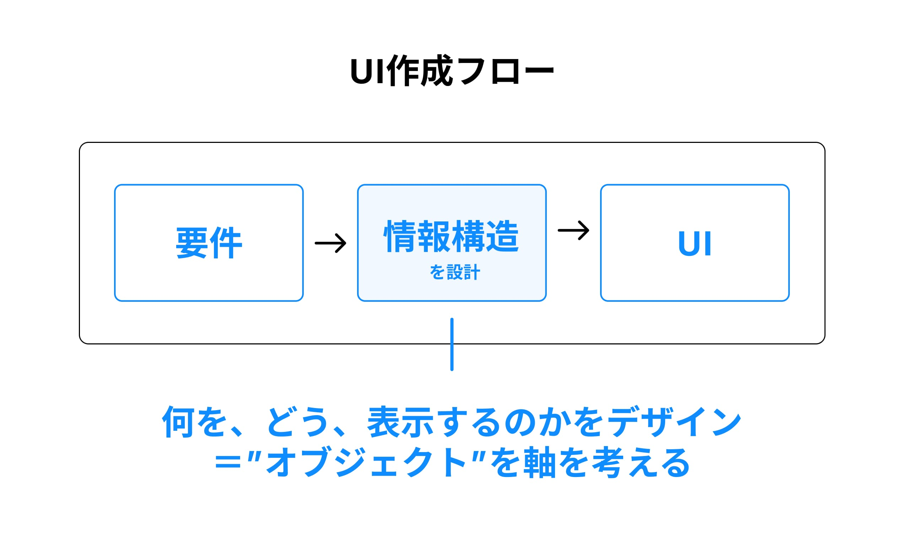
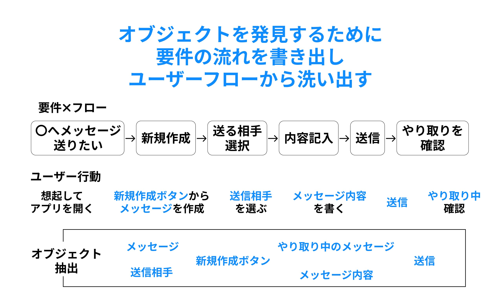
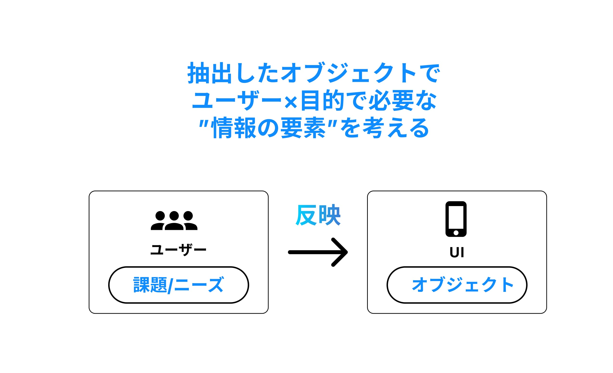

初めてUIデザインをした時に、見やすさや美しさなど表面的な部分にばかり目がいきがちでした。
しかし、UIデザインはUIの構造設計が使いやすさを大きく左右してくることをOOUI（オブジェクト指向UI）という概念を知ることで変化しました。
以降このオブジェクト指向は私自身も日々のUIを考える際に意識しており、UI設計をする上での一つの指針となり、知識を整理する意味でも今回学んだ事をまとめることで自分の理解が進むと思い記録しておきます。
まず前提としてUIは主に「オブジェクト指向」か「タスク指向」のどちらからで制作され、この2つには明確な違いがあります。
メッセージアプリを例にして分かりやすく説明します。
タスク指向
まずタスク指向の「タスク」とは、動詞のことを表します。
選択肢ごとにモードが別れていて、状態切替を中心にしています。
選択肢ベースに構成しており、タスクごとに専用の画面があるイメージです。
オブジェクト指向
オブジェクト指向の「オブジェクト」とは、名詞やモノのことを表します。
具体的にはECサイト内の商品の服や食べ物などを指します。
(今回は通知一覧)
この、ユーザーが認識できるモノ「オブジェクト」を起点にUIを設計する手法をオブジェクト指向UIと呼びます。
タスク指向とオブジェクト指向で作られたUIを比較してみるとオブジェクト指向で作られたUIの方が画面数が少なく、かつユーザーの目標となるオブジェクトが最初に出てきているのでより直感的に操作可能となっています。
オブジェクト指向UIのほうが優れていて、タスク指向UIは必要ないと最初に思いましたがそんなことはなく、それぞれの指向の特徴があり適材適所で使い分けられることが大切だと学ぶ中で感じました。
例えば、ATMのUIは、自分の口座という「オブジェクト」に対して引き出しや残高確認をするため、「タスク」だけで完結する方が使いやすいですし、実際にタスク指向です。コピー機のUIも似た構成ですね。
オブジェクト指向UIよりタスク指向UIが向いているのは、ユーザーを目的に対して「エラーなく誘導したい」ケースです。
OOUIでの設計方法
オブジェクト=UIで表現するメインの情報
そのオブジェクトによってどのようなUIになるのか決まる。
抽出したオブジェクトの要素はユーザーに届けたいものである必要があり重点的に考えてオブジェクトの中身を決めること
つまり課題やニーズに対して必要なオブジェクトを考えてることは要件にあったUIをつくることができるので重要なもの。
オブジェクト指向UIを実際のUIを作成する流れやポイントを下記に図式化してまとめました。
   抽出したオブジェクトを今度はUI画面フロー図にすることで整理することができます。
ルートナビとは「ユーザーが最初に想起するページの集まり、起点」になり最上位のナビゲーション項目です。
※グローバルナビやボトムナビと言われる。
UIフロー図を設計した後にようやくレイアウトの作成のフェーズにいきますが、ここではレイアウトやデザインについては割愛します。
おわりに
OOUIを学んでみて、OOUIはUIデザインの基本となる強力な概念であり、起こせる変化も大きいと言うことを実感しました。
よって良いUIを制作するためには情報設計の部分に対してオブジェクトをベースに考えることが大切だと感じました。
OOUIを実践して、より良いアプリやWEBサービスをデザインしていきます。
ご覧いただきありがとうございました。